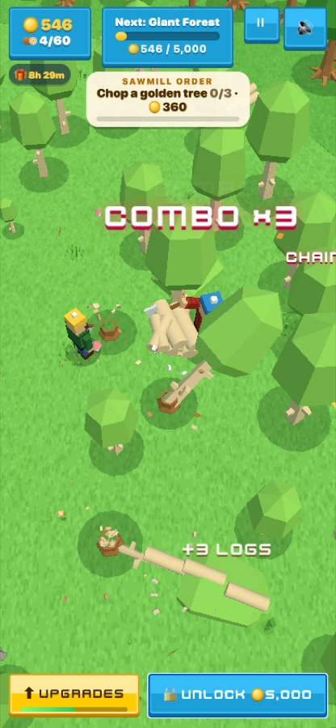

Chop a Forest update: lumberjack pals and Golden Groves

Our first players gave Chop a Forest a calm, steady first few minutes, but the data showed the middle of a session went quiet: after the first upgrades there was too long a stretch with nothing new to aim for. This update fills that gap.
What's new
- Lumberjack pals. Hire the sawmill crew and a pal walks into the forest to chop trees and haul logs to the mill for you. A second pal joins at crew level 3 and a third at level 6.
- Golden Groves. Every few minutes a row of trees turns golden for 40 seconds. Stand on the marker to topple the whole row in one domino chain, and every log is worth five times as much.
- Orders that keep you moving. The sawmill now gives a steady run of small orders, and the Upgrades button lights up when you can afford what an order needs.
- A clear next step. A small bar under the Upgrades button fills toward your next upgrade.
- Faster forests. The Giant Forest, Frost Pines and Autumn Grove all unlock sooner.
What's next
We're watching how long sessions last with the new build, and we want to add more tree types and a few seasonal touches for winter.
Play the update free in your browser →Made by Holiday Play Studio, a small indie studio. We design our games with the help of AI coding tools (Claude Code), then play-test and polish them by hand. The games are free to play in your browser.